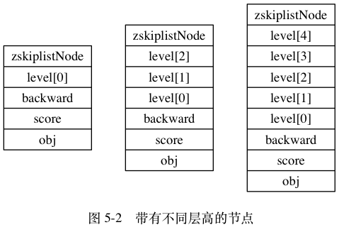

数据结构#
1. 简单动态字符串#
- Redis只会使用C语言字符串作为字面量，而经常使用的是自己构建的简单字符串SDS(simple dynamic string)抽象类型。并把SDS作为默认的字符串表示。
SDS的结构#
struct sdshdr {
// 记录 buf 数组中已使用字节的数量
// 等于 SDS 所保存字符串的长度
int len;
// 记录 buf 数组中未使用字节的数量
int free;
// 字节数组，用于保存字符串
char buf[];
};
- 例子

- free：没有分配未使用的字节
- len：字节长度为5的字符串
- buf：char类型的字节数组遵循C语言字符串定义以空字符串结尾,但是不算在len的长度里
SDS与C语言字符串的区别#
常数复杂度获取数组长度#
- 在C语言中获取字符串长度需要遍历整个字符串，时间复杂度为O(n)
- 在SDS中有内置的len属性记录了字符串的长度，时间复杂度为O(1)
杜绝缓存区溢出#
- 在C语言中字符串是不记录自身长度的。
- 我需要在该字符串后拼接新的字符串，用到
<string.h>/strcat函数进行拼接，src拼接到dest后。
char *strcat(char *dest, const char *src);
- 因为C字符串不记录自身长度，所以在C语言里默认你的字符数组是可以容纳src中的所有内容。一旦数组无法容纳，就会出现缓冲区泄露问题。
- 实例：
- 内存中有两个紧贴的字符串s1和s2，
s1="Redis" s2="MongoDB"

- 执行Redis命令
- 因未对s1分配足够的空间，出现数据溢出，覆盖s2

在SDS中有用于执行字符串拼接的函数sdscat#
- 在s后拼接Cluster，
sdscat在拼接前会检查s长度是否足够，如不足则会扩展长度，然后再拼接。


- sdscat命令执行后不仅执行了拼接操作还分配了13字节的未使用空间。len和free相等，涉及到空间分配策略。
减少修改字符串长度时所涉及的内存重分配次数#
- C语言字符串如果要修改长度
- 拼接字符串(append)：内存重分配来扩展底层数组的长度，如果忘记就会出现缓冲区溢出
- 截断字符串(trim)：内存重分配释放多余的字符串空间
如果忘记就会出现内存泄漏
- SDS修改字符串长度
- 拼接字符串(空间预分配)：SDS执行命令
sdscat拼接字符串
- free未分配空间足够拼接新的字符串——直接拼接
- free未分配空间不够拼接新的字符串——对SDS进行空间扩展
- 如果扩展后的
len<1MB，给free分配len大小的空间作为未分配空间。
例如：修改后len变为13字节，那么程序也会分13字节的未使用空间，SDS的实际长度就为13byt+13byt+1byt=27byt，1字节为末尾空字符。
- 如果扩展后的
len>1MB，给free分配1MB空间作为未分配空间。
例如：修改后的len变为10MB，那么程序就会分1MB的未使用空间，SDS的实际长度就是10MB+1MB+1byt
- 缩短字符串(惰性空间释放)：SDS的API执行缩短字符串时，程序不会立即回收多余空间，而是把多余的空间用
free记录，等待使用。
sdstrim(s, "XY"); // 移除 SDS 字符串中的所有 'X' 和 'Y'


- 通过惰性空间释放，SDS避免了缩短字符串内存重分配问题，为将来增加字符串做了优化。
- SDS也提供了API，真正的释放未使用空间。不用担心内存浪费问题。
二进制安全#
- C语言字符串在读入的时候会把空字符串作为结尾，这样就会出现如果读入
" hello"空字符在最前、"hello world"空字符在中间的情况，读入不正常。——这样的限制会出现C字符串只能保存一些文本数据，而不能保存音频，图片、视频等二进制数据。
- SDS则没有对读入的数据做任何限制——SDS里的len属性值是用空字符串来判断结束的。你写入数据什么样子，读取就是什么样子。
所有SDS的API都是用二进制的方式处理SDS中的buf里的数据，所以是二进制安全的。
这也是我们将SDS的buf属性称为字节数组的原因——Redis 不是用这个数组来保存字符，而是用它来保存一系列二进制数据。
兼容部分C语言字符串函数#
- 通过遵循C语言字符串的以空字符结尾，SDS可以在有需要的时候重用
<string.h>里的函数库，避免代码重复。
SDS API#
| 函数 |
作用 |
时间复杂度 |
sdsnew |
创建一个包含给定 C 字符串的 SDS 。 |
O(N) ， N 为给定 C 字符串的长度。 |
sdsempty |
创建一个不包含任何内容的空 SDS 。 |
O(1) |
sdsfree |
释放给定的 SDS 。 |
O(1) |
sdslen |
返回 SDS 的已使用空间字节数。 |
这个值可以通过读取 SDS 的 len 属性来直接获得，复杂度为 O(1) 。 |
sdsavail |
返回 SDS 的未使用空间字节数。 |
这个值可以通过读取 SDS 的 free 属性来直接获得，复杂度为 O(1) 。 |
sdsdup |
创建一个给定 SDS 的副本（copy）。 |
O(N) ， N 为给定 SDS 的长度。 |
sdsclear |
清空 SDS 保存的字符串内容。 |
因为惰性空间释放策略，复杂度为 O(1) 。 |
sdscat |
将给定 C 字符串拼接到 SDS字符串的末尾。 |
O(N) ， N 为被拼接 C 字符串的长度。 |
sdscatsds |
将给定 SDS 字符串拼接到另一个 SDS字符串的末尾。 |
O(N) ， N 为被拼接 SDS 字符串的长度。 |
sdscpy |
将给定的 C 字符串复制到 SDS 里面，覆盖 SDS 原有的字符串。 |
O(N) ， N 为被复制 C 字符串的长度。 |
sdsgrowzero |
用空字符将 SDS 扩展至给定长度。 |
O(N) ， N 为扩展新增的字节数。 |
sdsrange |
保留 SDS 给定区间内的数据，不在区间内的数据会被覆盖或清除。 |
O(N) ， N 为被保留数据的字节数。 |
sdstrim |
接受一个 SDS 和一个 C 字符串作为参数，从 SDS 左右两端分别移除所有在 C字符串中出现过的字符。 |
O(M*N) ， M 为 SDS 的长度，N 为给定 C 字符串的长度。 |
sdscmp |
对比两个 SDS 字符串是否相同。 |
O(N) ， N 为两个 SDS 中较短的那个 SDS的长度。 |
2. 链表#
链表和链表节点#
typedef struct listNode {
// 前置节点
struct listNode *prev;
// 后置节点
struct listNode *next;
// 节点的值
void *value;
} listNode;
多个链表节点通过prev和next组成双端链表。
typedef struct list {
// 表头节点
listNode *head;
// 表尾节点
listNode *tail;
// 链表所包含的节点数量
unsigned long len;
// 节点值复制函数
void *(*dup)(void *ptr);
// 节点值释放函数
void (*free)(void *ptr);
// 节点值对比函数
int (*match)(void *ptr, void *key);
} list;
list结构提供了表头节点head、表尾节点tail、链表长度计数器len、实现多态链表所需的类型特定函数：
* dup：用于复制链表节点所保存的值
* free：用于释放链表节点所保存的值
* match：用于对比链表节点所保存的值是否和输入的值相等

Redis链表实现的特性#
- 双端：链表节点有前置节点
prev、后置节点next
- 无头：表头的
prev节点和表尾的next节点都是NULL，对链表的访问都是以NULL结尾
- 有链表节点计数器：list结构提供了链表节点计数器，查找链表节点数的时间复杂度为O(1)
- 带表头指针和表尾指针：list结构提供了表头节点
head、表尾节点tail，查找表头和表尾节点的时间复杂度为O(1)
- 多态：通过list结构的
dup free match 设置链表不同的类型特定函数，来实现链表保存各种不同类型的值。
链表API#
| 函数 |
作用 |
时间复杂度 |
listSetDupMethod |
将给定的函数设置为链表的节点值复制函数。 |
O(1)。 |
listGetDupMethod |
返回链表当前正在使用的节点值复制函数。 |
O(1)。 |
listSetFreeMethod |
将给定的函数设置为链表的节点值释放函数。 |
O(1)。 |
listGetFree |
返回链表当前正在使用的节点值释放函数。 |
O(1)。 |
listSetMatchMethod |
将给定的函数设置为链表的节点值对比函数。 |
O(1)。 |
listGetMatchMethod |
返回链表当前正在使用的节点值对比函数。 |
O(1)。 |
listLength |
返回链表的长度（包含了多少个节点）。 |
O(1)。 |
listFirst |
返回链表的表头节点。 |
O(1)。 |
listLast |
返回链表的表尾节点。 |
O(1)。 |
listPrevNode |
返回给定节点的前置节点。 |
O(1)。 |
listNextNode |
返回给定节点的后置节点。 |
O(1)。 |
listNodeValue |
返回给定节点目前正在保存的值。 |
O(1)。 |
listCreate |
创建一个不包含任何节点的新链表。 |
O(1)。 |
listAddNodeHead |
将一个包含给定值的新节点添加到表头。 |
O(1)。 |
listAddNodeTail |
将一个包含给定值的新节点添加到表尾。 |
O(1)。 |
listInsertNode |
将一个包含给定值的新节点添加到节点前后。 |
O(1)。 |
listSearchKey |
查找并返回链表中包含给定值的节点。 |
O(N)， N为链表长度。 |
listIndex |
返回链表在给定索引上的节点。 |
O(N)， N为链表长度。 |
listDelNode |
从链表中删除给定节点。 |
O(1)。 |
listRotate |
将链表的表尾节点弹出并移到表头。 |
O(1)。 |
listDup |
复制一个给定链表的副本。 |
O(N)， N为链表长度。 |
listRelease |
释放给定链表以及链表中的所有节点。 |
O(N)， N为链表长度。 |
3. 字典（dict）#
- 定义：字典又称为符号表、关联数组、映射。是一种以键值对形式保存的抽象数据结构。因为Redis所用的C语言底层没有这种数据结构，所有Redis自己构建了字典。
字典的实现#
哈希算法#
- 当我们需要向字典里添加键值对的时候就要用到哈希算法。
- 流程：
根据键计算哈希值、索引值 -> 根据索引值把包含这个价值对的哈希节点放到哈希表的数组的指定索引上
- 计算方法：
# 使用字典设置的哈希函数，计算键 key 的哈希值
hash = dict->type->hashFunction(key);
# 使用哈希表的 sizemask 属性和哈希值，计算出索引值
# 根据情况不同， ht[x] 可以是 ht[0] 或者 ht[1]
index = hash & dict->ht[x].sizemask;
解决键冲突#
- 定义：哈希值相同，索引相同的键被分配到数组的同一个索引上。
- 解决方法：链地址法
通过哈希节点里的next指针把索引相同的哈希节点连接在一起形成单向链表。
- 举例：k1和k2的索引值都为2。
 添加k2
添加k2
 因哈希节点没有指向链表表尾的指针，所以每次添加键冲突的键值对都要放在头部。复杂度为O(1)。
因哈希节点没有指向链表表尾的指针，所以每次添加键冲突的键值对都要放在头部。复杂度为O(1)。
重新散列(rehash)#
- 定义：随着哈希表内保存的键值对的不断增多，为了让负载因子维持在一个合理的范围内，要对哈希表进行扩展或收缩。
- 负载因子：哈希表已保存节点数量 / 哈希表大小。
load_factor = ht[0].used / ht[0].size
- 触发条件：
- 服务器没有执行
bgsave bgrewriteaof 命令，负载因子>=1
- 服务器在执行
bgsave bgrewriteaof 命令，负载因子>=5
- 负载因子<0.1
- 流程：
- 为
ht[1]分配空间，大小规则如下：
- 扩展时，
ht[0].used * 2<= 2^n，符合条件第一个2^n即空间大小。
- 缩小时，
ht[0].used <= 2^n，符合条件第一个2^n即空间大小。
- 把
ht[0]上的所有键值对rehash到ht[1]。
rehash：重新计算哈希值和索引值，并放置到ht[1]。
- 释放
ht[0]，把ht[1]设置为ht[0]，创建新的空白哈希表ht[1]。
- 举例：条件
ht[0].used = 4

- 分配空间
ht[0].used * 2 = 4 * 2 = 8，比4大等的一个2^n为2^3=8。所以分配空间ht[1].size = 8。

- 转移键值对
重新计算键值对的哈希值和索引值，然后放置到ht[1]。

- 标准化
释放ht[0]，把ht[1]设置成ht[0]，重新创建新的空哈希表ht[1]。

渐进式rehash#
- 定义：在哈希表数据比较庞大的时候，如果要一次性rehash，计算量太大，可能导致服务器在一段时间内停止工作。因此引入了渐进式rehash的方式，渐进式rehash时分多次，渐进式的rehash。
- 步骤：
- 为
ht[1]分配空间。字典同时持有ht[0] ht[1]两个哈希表
- 在字典中为
rehashidx赋值为0,表示开始工作
- 在rehash期间，每次对字典执行增删改查操作的同时，对索引为
rehashidx的哈希节点进行rehash，并且让rehashidx + 1。
- 随着对字典的不断操作，rehash操作完成，
rehashidx = -1。
采用分治思想，把rehash操作分摊到每次增删改查操作上，避免了集中rehash带来大庞大计算量。
- 对于渐进式rehash，每次删改查操作都要对两张哈希表进行。并且新增的键值对都要存在
ht[1]中。
字典常用API#
| 函数 |
作用 |
时间复杂度 |
dictCreate |
创建一个新的字典。 |
O(1)。 |
dictAdd |
将给定的键值对添加到字典里面。 |
O(1)。 |
dictReplace |
将给定的键值对添加到字典里面，如果键已经存在于字典，那么用新值取代原有的值。 |
O(1)。 |
dictFetchValue |
返回给定键的值。 |
O(1)。 |
dictGetRandomKey |
从字典中随机返回一个键值对。 |
O(1)。 |
dictDelete |
从字典中删除给定键所对应的键值对。 |
O(1)。 |
dictRelease |
释放给定字典，以及字典中包含的所有键值对。 |
O(N)，N为字典包含的键值对数量。 |
重点回顾#
- 字典广泛应用于Redis实现各种功能，包括数据库和哈希键等。
- Redis中的字典用自己构建的哈希表底层实现，每个字典中带有两个哈希表，一个作为日常使用，另一个作为rehash的时候使用。
- 当字典被用作数据库、哈希键的底层实现时，Redis用
MurmurHash2算法来计算键的哈希值。
- 哈希表使用链地址法来解决哈希冲突，根本是哈希节点内置了next属性，当键值对的哈希值和索引值相同的时候，会在同一个索引上形成单向链表。
- 在哈希表进行rehash操作的时候，采用分治的思想，分多次、渐进式的对每个键值对执行rehash。
4. 跳跃表（skiplist）#
跳跃表的实现#
- 跳表的整体结构
 跳表由
跳表由zskiplistNode跳表节点和zskiplist保存跳表信息 构成。
zskiplist属性：
header：指向跳表头部tail：指向跳表尾部level：记录除表头外，最大的节点的层数length：记录出表头外，总的节点个数
zskiplistNode属性：
- 层(
level)：节点中用L1、L2、L3…表示，每层有两个属性：
前进指针：访问位于表尾的其他节点
跨度：前进指针所指节点和当前节点的距离
- 后退(
backward)：BW标记，位于当前节点的前一节点，在从表尾往表头遍历时使用
- 分值(
score)：节点按分值从小到大排列
- 成员对象(obj)：o1、o2、o3，为节点所保存的成员对象

跳跃表API#
| 函数 |
作用 |
时间复杂度 |
zslCreate |
创建一个新的跳跃表。 |
O(1)。 |
zslFree |
释放给定跳跃表，以及表中包含的所有节点。 |
O(N)，N为跳跃表的长度。 |
zslInsert |
将包含给定成员和分值的新节点添加到跳跃表中。 |
平均 O(log N)，最坏 O(N)，N为跳跃表长度。 |
zslDelete |
删除跳跃表中包含给定成员和分值的节点。 |
平均 O(log N)，最坏 O(N)，N为跳跃表长度。 |
zslGetRank |
返回包含给定成员和分值的节点在跳跃表中的排位。 |
平均 O(log N)，最坏 O(N)，N为跳跃表长度。 |
zslGetElementByRank |
返回跳跃表在给定排位上的节点。 |
平均 O(log N)，最坏 O(N)，N为跳跃表长度。 |
zslIsInRange |
给定一个分值范围，检测是否在跳跃表的分值范围内。 |
O(1)。 |
zslFirstInRange |
给定一个分值范围，返回第一个符合范围的节点。 |
平均 O(log N)，最坏 O(N)，N为跳跃表长度。 |
zslLastInRange |
给定一个分值范围，返回最后一个符合范围的节点。 |
平均 O(log N)，最坏 O(N)，N为跳跃表长度。 |
zslDeleteRangeByScore |
给定一个分值范围，删除范围内的所有节点。 |
O(N)，N为被删除节点数量。 |
zslDeleteRangeByRank |
给定一个排位范围，删除范围内的所有节点。 |
O(N)，N为被删除节点数量。 |
重点回顾#
- 跳表是有序集合的底层实现，除此之外没有应用
- 跳表是可以实现二分查找的有序链表
- 最底层包含所用元素
- 每个索引节点包含两个指针，向右和向下
- 跳表查询、插入、删除的时间复杂度为 O(logn)，与平衡二叉树接近
5. 整数集合(intset)#
- 定义：
- 整数集合是Redis用于保存整数数值的集合抽象数据结构，且不会出现重复元素。
- 整数集合是集合键的底层实现之一。
- 当一个集合只包含整数，且数据量不大的时候，就会使用整数集合作为底层集合键的底层实现。
整数集合的实现#
- 结构
typedef struct intset {
// 编码方式
uint32_t encoding;
// 集合包含的元素数量
uint32_t length;
// 保存元素的数组
int8_t contents[];
} intset;
encoding：
属性值为INTSET_ENC_INT16，就是int16_t类型数组。（最小值为-32,768 ，最大值为32,767）
属性值为INTSET_ENC_INT32，就是int32_t类型数组。（最小值为-2,147,483,648 ，最大值为2,147,483,647）
属性值为INTSET_ENC_INT64，就是int64_t类型数组。（最小值为-9,223,372,036,854,775,808 ，最大值为9,223,372,036,854,775,807）length：contents数组的长度。contents：整数集合的底层实现，从小到大排列，没有重复项。
- 当我们新添加的元素类型比现有的所有数据类型都长的时候，就要进行数据类型的升级。
- 升级整数集合并添加新元素步骤：
- 根据新元素的类型扩展整个整数集合底层数组的空间大小，并为新元素分配空间。
- 将底层数组里现有的元素进行类型转换，并放在正确的位置。
- 将新元素添加到底层数组里。
- 举例：有一编码为INTSET_ENC_INT16的整数集合

contents数组所占位数：

- 根据添加元素数据类型扩展空间

- 为新元素分配空间并且对已有元素进行类型转换，放在正确位置。


- 将新元素添加到底层数组里。

- 修改整数集合
encoding属性和length属性

整数集合API#
| 函数 |
作用 |
时间复杂度 |
intsetNew |
创建一个新的整数集合。 |
O(1)。 |
intsetAdd |
将给定元素添加到整数集合里面。 |
O(N)。 |
intsetRemove |
从整数集合中移除给定元素。 |
O(N)。 |
intsetFind |
检查给定值是否存在于集合。 |
O(log N)。 |
intsetRandom |
从整数集合中随机返回一个元素。 |
O(1)。 |
intsetGet |
取出底层数组在给定索引上的元素。 |
O(1)。 |
intsetLen |
返回整数集合包含的元素个数。 |
O(1)。 |
intsetBlobLen |
返回整数集合占用的内存字节数。 |
O(1)。 |
6. 压缩列表（ziplist）#
- 定义：
- 是列表键和哈希键的底层实现之一
- 当列表键只包含少量列表项，并且每个列表项要么是小整数，要么是短字符串。
- 当哈希键只包含少量键值对，并且每个键值对的键和值要么是小整数，要么是短字符串。
压缩列表的构成#
- 压缩列表由一组特殊编码的连续内存块组成的顺序型的数据结构，是为了节约内存而开发的。
- 压缩列表块的构成：

zlbytes：长度4字节，用于保存压缩列表的总的占用字节数。在对压缩列表进行内存重分配或者计算zlend的位置的时候使用。zltail：长度4字节，记录压缩列表表尾节点的地址距离表头节点的地址有多少字节。通过偏移量可以计算表尾节点的地址，无需遍历。zllen：长度2字节，记录压缩列表的节点长度。entryX：长度不定，用于记录字节数组或者整数数值。zlend：长度1字节，用于标记压缩列表末端。
- 示例：

zlbytes：属性值0xd2十进制为210，表示压缩列表总长210字节。zltail：属性值0xb3十进制179，如图p指针指向表头节点，用p+179表示末尾节点的地址值。zllen：属性值0x5十进制5，表示压缩列表包含5个节点
- 压缩列表节点构成
- 压缩列表的节点保存的是字节数组或者整数值。
- 字节数组规定如下：
- 长度小于等于2^6-1的字节数组
- 长度小于等于2^14-1的字节数组
- 长度小于等于2^32-1的字节数组
- 整数值规定如下
- 4位，且介于0-12直接的无符号整数
- 1字节长的有符号整数
- 3字节长的有符号整数
- int16_t类型整数
- int32_t类型整数
- int64_t类型整数
- 压缩列表节点构成图

previous_entry_length：节点位单位，记录了前一节点的长度。属性可以为1节点或者5节点
- 如果前一节点小于256字节，那么长度为1字节，前一节点的信息保存在这里
- 如果前一节点大于256字节，那么长度为5字节，第1个字节用0xFE表示十进制的256字节，然后4位用于保存前一节点的长度。
- 可以有用此计算前一节点的起始地址，
当前起始地址的指针-previous_entry_length得出。
encoding：记录content属性值的数据类型和长度。content：记录节点的值，可以是字节数组或者整数值
连锁更新#
- 因为
previous_entry_length的特殊机制，如果现在设置一个压缩列表，内的节点长度都为250-253之间，那么如果要向表头新添加一个长度大于256字节的节点，那么原头节点的previous_entry_length就要进行内存重分配变成5个字节，然后这个节点整体长度也大于256字节了，就要对后一节点的previous_entry_length进行内存重分配。引发连锁反应。
- 示例：
- 设置一个压缩列表，内的节点长度都为250-253之间

- 向表头新添加一个长度大于256字节的节点

- 原头节点的
previous_entry_length进行内存重分配变成5个字节。
这个节点整体长度也大于256字节了，对后一节点的previous_entry_length进行内存重分配。
引发连锁反应。


- 同理删除节点也会出现连锁反应。
压缩列表API#
| 函数 |
作用 |
算法复杂度 |
ziplistNew |
创建一个新的压缩列表。 |
O(1)。 |
ziplistPush |
创建一个包含给定值的新节点，并将新节点添加到压缩列表的表头或表尾。 |
平均 O(N)，最坏 O(N^2)。 |
ziplistInsert |
将包含给定值的新节点插入到给定节点之后。 |
平均 O(N)，最坏 O(N^2)。 |
ziplistIndex |
返回压缩列表给定索引上的节点。 |
O(N)。 |
ziplistFind |
在压缩列表中查找并返回包含给定值的节点。 |
平均 O(N^2)，最坏 O(N^2)。 |
ziplistNext |
返回给定节点的下一个节点。 |
O(1)。 |
ziplistPrev |
返回给定节点的前一个节点。 |
O(1)。 |
ziplistGet |
获取给定节点所保存的值。 |
O(1)。 |
ziplistDelete |
从压缩列表中删除给定的节点。 |
平均 O(N)，最坏 O(N^2)。 |
ziplistDeleteRange |
删除压缩列表在给定索引上的连续多个节点。 |
平均 O(N)，最坏 O(N^2)。 |
ziplistBlobLen |
返回压缩列表目前占用的内存字节数。 |
O(1)。 |
ziplistLen |
返回压缩列表目前包含的节点数量。 |
节点数量 < 65535 时 O(1)，节点数量 > 65535 时 O(N)。 |
重点回顾#
- 压缩列表是为了节约内存开发的顺序型数据结构
- 压缩列表用于列表键和哈希键的底层实现之一
- 压缩列表里的节点可以是字节数组也可以是整数值
- 新增或删除节点都可能会出现连锁更新操作
- Redis创建了一个对象系统，把以上这些数据结构作为底层实现。
- 5大对象包括：字符串对象、列表对象、哈希对象、集合对象、有序集合对象。
- 通过这五种对象，Redis在执行命令之前根据对象的类型判断是否可以执行命令。可以针对不同的场景，用不同的数据结构实现。
- Redis对象实现了基于引用计数技术的内存回收机制：当对象不再使用，自动释放内存。
- Redis对象实现了基于引用计数技术的对象共享机制：在适当情况下多个数据库可以共享同一个对象来节约内存。
对象的类型和编码#
- Redis用对象来表示数据库中的键值对，当创建一个键值对的时候，至少会创建两个对象，键对象和值对象。
Redis中的对象redisObject结构：#
typedef struct redisObject {
// 类型
unsigned type:4;
// 编码
unsigned encoding:4;
// 指向底层实现数据结构的指针
void *ptr;
// ...
} robj;
-
type：对象的类型，值为一下常量中的一个
REDIS_STRING：字符串对象REDIS_LIST：列表对象REDIS_HASH：哈希对象REDIS_SET：集合对象REDIS_ZSET：有序集合对象- 示例：（用TYPE + 键名来查看值的对象类型）
# 键为字符串对象，值为字符串对象
redis> SET msg "hello world"
OK
redis> TYPE msg
string
# 键为字符串对象，值为列表对象
redis> RPUSH numbers 1 3 5
(integer) 6
redis> TYPE numbers
list
# 键为字符串对象，值为哈希对象
redis> HMSET profile name Tome age 25 career Programmer
OK
redis> TYPE profile
hash
# 键为字符串对象，值为集合对象
redis> SADD fruits apple banana cherry
(integer) 3
redis> TYPE fruits
set
# 键为字符串对象，值为有序集合对象
redis> ZADD price 8.5 apple 5.0 banana 6.0 cherry
(integer) 3
redis> TYPE price
zset
-
encoding：记录值对象所使用的编码格式，通俗说就是这个对象使用什么数据结构作为底层实现。
编码常量如下：
| 编码常量 |
编码所对应的底层数据结构 |
REDIS_ENCODING_INT |
long 类型的整数 |
REDIS_ENCODING_EMBSTR |
embstr 编码的简单动态字符串 |
REDIS_ENCODING_RAW |
简单动态字符串 |
REDIS_ENCODING_HT |
字典 |
REDIS_ENCODING_LINKEDLIST |
双端链表 |
REDIS_ENCODING_ZIPLIST |
压缩列表 |
REDIS_ENCODING_INTSET |
整数集合 |
REDIS_ENCODING_SKIPLIST |
跳跃表和字典 |
-
每种类型的对象至少可以使用两种以上的编码格式，如下表
| 类型 |
编码 |
对象 |
REDIS_STRING |
REDIS_ENCODING_INT |
使用整数值实现的字符串对象。 |
REDIS_STRING |
REDIS_ENCODING_EMBSTR |
使用 embstr 编码的简单动态字符串实现的字符串对象。 |
REDIS_STRING |
REDIS_ENCODING_RAW |
使用简单动态字符串实现的字符串对象。 |
REDIS_LIST |
REDIS_ENCODING_ZIPLIST |
使用压缩列表实现的列表对象。 |
REDIS_LIST |
REDIS_ENCODING_LINKEDLIST |
使用双端链表实现的列表对象。 |
REDIS_HASH |
REDIS_ENCODING_ZIPLIST |
使用压缩列表实现的哈希对象。 |
REDIS_HASH |
REDIS_ENCODING_HT |
使用字典实现的哈希对象。 |
REDIS_SET |
REDIS_ENCODING_INTSET |
使用整数集合实现的集合对象。 |
REDIS_SET |
REDIS_ENCODING_HT |
使用字典实现的集合对象。 |
REDIS_ZSET |
REDIS_ENCODING_ZIPLIST |
使用压缩列表实现的有序集合对象。 |
REDIS_ZSET |
REDIS_ENCODING_SKIPLIST |
使用跳跃表和字典实现的有序集合对象。 |
-
使用命令OBJECT ENCODING + 键查看值对象的编码格式：
redis> SET msg "hello wrold"
OK
redis> OBJECT ENCODING msg
"embstr"
redis> SET story "long long long long long long ago ..."
OK
redis> OBJECT ENCODING story
"raw"
redis> SADD numbers 1 3 5
(integer) 3
redis> OBJECT ENCODING numbers
"intset"
redis> SADD numbers "seven"
(integer) 1
redis> OBJECT ENCODING numbers
"hashtable"
字符串对象#
int#
- 条件：输入值为整数值并且可以用
long来表示
- 转换过程：
ptr属性由*void转成long，编码格式设置为int
redis> SET number 10086
OK
redis> OBJECT ENCODING number
"int"

raw#
* 条件：字符串长度大于<font color="red">39</font>字节
* 转换过程：编码格式设置为`raw`
```
redis> SET story "Long, long, long ago there lived a king ..."
OK
redis> STRLEN story
(integer) 43
redis> OBJECT ENCODING story
"raw"
```

embstr#
- 条件：字符串长度小于等于39字节
- 转换过程：调用一次内存分配一块连续的内存空间，空间包含
redisObject sdshdr，编码格式设置为embstr
redis> SET msg "hello"
OK
redis> OBJECT ENCODING msg
"embstr"

- 好处：
- 只用分配一次内存空间
- 释放也只需释放一次
- 可以更好的利用缓存优势
注意事项#
- 小数浮点类型的数据在Redis中也是用字符串进行保存，保存过程：先转换成字符串，再保存转换后的字符串。在对小数浮点类型的数据进行计算操作的时候先转换成浮点型再操作，再转换成字符串进行保存。
redis> SET pi 3.14
OK
redis> OBJECT ENCODING pi
"embstr"
redis> INCRBYFLOAT pi 2.0
"5.14"
redis> OBJECT ENCODING pi
"embstr"
程序先取"3.14"转换成浮点值3.14，计算得5.14，再转换成"5.14"字符串进行储存。
编码转换#
int编码的字符串对象和emtstr编码的字符串对象，在满足条件的时候都会转换成raw编码。- 如在
int编码的字符串对象后加hello world，不满足int编码条件
- 在
emtstr编码的字符串对象后加够39个字节以上。
字符串命令的实现#
| 命令 |
int 编码的实现方法 |
embstr 编码的实现方法 |
raw 编码的实现方法 |
SET |
使用 int 编码保存值。 |
使用 embstr 编码保存值。 |
使用 raw 编码保存值。 |
GET |
将整数值转换为字符串值，然后返回。 |
直接返回字符串值。 |
直接返回字符串值。 |
APPEND |
转换为 raw 编码，然后按 raw 编码方式操作。 |
转换为 raw 编码，然后按 raw 编码方式操作。 |
使用 sdscatlen 追加字符串到末尾。 |
INCRBYFLOAT |
取出整数值，进行加法计算并保存。 |
取出字符串值，进行加法计算并保存。 |
取出字符串值，进行加法计算并保存。 |
INCRBY |
进行整数加法计算并保存。 |
不支持，返回错误。 |
不支持，返回错误。 |
DECRBY |
进行整数减法计算并保存。 |
不支持，返回错误。 |
不支持，返回错误。 |
STRLEN |
将整数值转换为字符串值，计算并返回长度。 |
使用 sdslen 返回字符串长度。 |
使用 sdslen 返回字符串长度。 |
SETRANGE |
转换为 raw 编码，然后按 raw 编码方式操作。 |
转换为 raw 编码，然后按 raw 编码方式操作。 |
在指定索引处设置字符。 |
GETRANGE |
将整数值转换为字符串值，返回指定索引字符。 |
直接返回指定索引字符。 |
直接返回指定索引字符。 |
列表对象#
ziplist#
- 条件：同时满足列表保存的所有字符串小于64字节，列表对象保存的元素数量小于512个。
- 底层实现：压缩列表
- 转换过程：ptr指向压缩列表结构
redis> RPUSH numbers 1 "three" 5
(integer) 3

linkedlist#
- 底层实现：双端链表
- 转换过程：ptr指针指向双端链表的头节点
 对StringObject进行的简化
对StringObject进行的简化


编码转换#
ziplist的条件不满足时触发编码转换。- 示例：
- 因保存了长度太大的元素而进行编码转换
# 所有元素的长度都小于 64 字节
redis> RPUSH blah "hello" "world" "again"
(integer) 3
redis> OBJECT ENCODING blah
"ziplist"
# 将一个 65 字节长的元素推入列表对象中
redis> RPUSH blah "wwwwwwwwwwwwwwwwwwwwwwwwwwwwwwwwwwwww"
(integer) 4
# 编码已改变
redis> OBJECT ENCODING blah
"linkedlist"
- 因保存的元素数量过多而进行编码转换
# 列表对象包含 512 个元素
redis> EVAL "for i=1,512 do redis.call('RPUSH', KEYS[1], i) end" 1 "integers"
(nil)
redis> LLEN integers
(integer) 512
redis> OBJECT ENCODING integers
"ziplist"
# 再向列表对象推入一个新元素，使得对象保存的元素数量达到 513 个
redis> RPUSH integers 513
(integer) 513
# 编码已改变
redis> OBJECT ENCODING integers
"linkedlist"
列表命令的实现#
| 命令 |
ziplist 编码的实现方法 |
linkedlist 编码的实现方法 |
LPUSH |
调用 ziplistPush 函数，将新元素推入到压缩列表的表头。 |
调用 listAddNodeHead 函数，将新元素推入到双端链表的表头。 |
RPUSH |
调用 ziplistPush 函数，将新元素推入到压缩列表的表尾。 |
调用 listAddNodeTail 函数，将新元素推入到双端链表的表尾。 |
LPOP |
调用 ziplistIndex 函数定位压缩列表的表头节点，然后调用 ziplistDelete 函数删除表头节点。 |
调用 listFirst 函数定位双端链表的表头节点，然后调用 listDelNode 函数删除表头节点。 |
RPOP |
调用 ziplistIndex 函数定位压缩列表的表尾节点，然后调用 ziplistDelete 函数删除表尾节点。 |
调用 listLast 函数定位双端链表的表尾节点，然后调用 listDelNode 函数删除表尾节点。 |
LINDEX |
调用 ziplistIndex 函数定位压缩列表中的指定节点，然后返回节点所保存的元素。 |
调用 listIndex 函数定位双端链表中的指定节点，然后返回节点所保存的元素。 |
LLEN |
调用 ziplistLen 函数返回压缩列表的长度。 |
调用 listLength 函数返回双端链表的长度。 |
LINSERT |
插入新节点到压缩列表时，使用 ziplistPush 函数；插入新节点到其他位置时，使用 ziplistInsert 函数。 |
调用 listInsertNode 函数，将新节点插入到双端链表的指定位置。 |
LREM |
遍历压缩列表节点，并调用 ziplistDelete 函数删除包含给定元素的节点。 |
遍历双端链表节点，并调用 listDelNode 函数删除包含给定元素的节点。 |
LTRIM |
调用 ziplistDeleteRange 函数，删除压缩列表中所有不在指定索引范围内的节点。 |
遍历双端链表节点，并调用 listDelNode 函数删除链表中所有不在指定索引范围内的节点。 |
LSET |
调用 ziplistDelete 函数删除压缩列表指定索引上的节点，然后调用 ziplistInsert 函数插入包含给定元素的新节点。 |
调用 listIndex 函数定位双端链表指定索引上的节点，然后通过赋值操作更新节点的值。 |
哈希对象#
ziplist#
- 条件：同时满足哈希对象保存的所有键值对的键和值小于64字节，哈希对象保存的键值对数量小于512个。
- 底层实现：压缩列表
- 转换过程：
ptr指向压缩列表，每个新添加的键值对都加在表尾，键先压入，值再压入。
redis> HSET profile name "Tom"
(integer) 1
redis> HSET profile age 25
(integer) 1
redis> HSET profile career "Programmer"
(integer) 1


hashtable#
- 底层实现：字典
- 转换过程：
ptr指向dict字典

编码转化#
ziplist条件不满足时转换成hashtable
哈希对象命令的实现#
| 命令 |
ziplist 编码实现方法 |
hashtable 编码的实现方法 |
HSET |
调用 ziplistPush 函数，将键和值分别推入到压缩列表的表尾。 |
调用 dictAdd 函数，将新节点添加到字典里面。 |
HGET |
调用 ziplistFind 函数，在压缩列表中查找指定键所对应的节点，然后返回值节点。 |
调用 dictFind 函数，在字典中查找指定键，返回对应的值。 |
HEXISTS |
调用 ziplistFind 函数，在压缩列表中查找指定键所对应的节点，存在则返回1，不存在返回0。 |
调用 dictFind 函数，在字典中查找指定键，存在则返回1，不存在返回0。 |
HDEL |
调用 ziplistFind 函数，在压缩列表中查找指定键所对应的节点，然后删除键节点和值节点。 |
调用 dictDelete 函数，从字典中删除指定键的键值对。 |
HLEN |
调用 ziplistLen 函数取得压缩列表节点数量，然后除以2得到键值对数量。 |
调用 dictSize 函数，返回字典中键值对的数量。 |
HGETALL |
遍历压缩列表，使用 ziplistGet 函数返回所有的键和值。 |
遍历字典，使用 dictGetKey 函数返回键，使用 dictGetVal 函数返回值。 |
集合对象#
intset#
- 条件：同时满足集合对象保存的所有元素都是整数值，集合对象保存的元素数量小于等于512个。
- 底层实现：整数集合
- 转化过程：
ptr指向intset
redis> SADD numbers 1 3 5
(integer) 3

hashtable#
- 底层实现：字典
- 转化过程：
ptr指向dict

编码转换#
- 不满足
intset编码自动转换成hashtable编码
集合对象命令的实现#
| 命令 |
intset 编码的实现方法 |
hashtable 编码的实现方法 |
SADD |
调用 intsetAdd 函数，将新元素添加到整数集合中。 |
调用 dictAdd 函数，以新元素为键，NULL 为值，将键值对添加到字典中。 |
SCARD |
调用 intsetLen 函数，返回整数集合的元素数量，这个数量即集合的元素数量。 |
调用 dictSize 函数，返回字典的键值对数量，这个数量即集合的元素数量。 |
SISMEMBER |
调用 intsetFind 函数，在整数集合中查找给定元素，存在返回1，不存在返回0。 |
调用 dictFind 函数，在字典中查找给定元素，存在返回1，不存在返回0。 |
SMEMBERS |
遍历整数集合，使用 intsetGet 函数返回所有的元素。 |
遍历字典，使用 dictGetKey 函数返回所有键作为集合元素。 |
SRANDMEMBER |
调用 intsetRandom 函数，从整数集合中随机返回一个元素。 |
调用 dictGetRandomKey 函数，从字典中随机返回一个键。 |
SPOP |
调用 intsetRandom 函数，随机返回整数集合中的一个元素，然后从集合中删除。 |
调用 dictGetRandomKey 函数，随机返回字典中的一个键，然后从字典中删除。 |
SREM |
调用 intsetRemove 函数，从整数集合中删除所有给定元素。 |
调用 dictDelete 函数，从字典中删除所有键为给定元素的键值对。 |
有序集合对象#
ziplist#
- 条件：同时满足有序集合对象保存的元素小于128个，有序集合对象保存的所有元素长度小于64字节。
- 底层实现：压缩列表
- 转化过程：
ptr指向压缩列表，集合元素按从小到大排序，小的在表头，大的在表尾。
redis> ZADD price 8.5 apple 5.0 banana 6.0 cherry
(integer) 3


skiplist#
- 底层实现：
zset结构作为底层实现，包含跳跃表和字典。
typedef struct zset {
zskiplist *zsl;
dict *dict;
} zset;
- 为什么同时使用跳跃表和字典来保存有序集合对象
- 跳跃表是一种有序的数据结构，支持范围查找，提高了有序集合在范围操作上的性能。
- 字典对单条数据可以快速的查找和更新，并且字典是无序的。
- 要注意，跳跃表和字典共享元素的成员和分量。所以性能不会差。
- 结构图

 注意：图中的StringObject是共享的图中为了方便给分开了。
注意：图中的StringObject是共享的图中为了方便给分开了。
编码转换#
- 有序集合对象内的元素同时满足元素个数小于
128个，所有元素的长度小于64字节；使用ziplist，否则使用skiplist。
- 示例：
元素过多导致编码转换。
# 对象包含了 128 个元素
redis> EVAL "for i=1, 128 do redis.call('ZADD', KEYS[1], i, i) end" 1 numbers
(nil)
redis> ZCARD numbers
(integer) 128
redis> OBJECT ENCODING numbers
"ziplist"
# 再添加一个新元素
redis> ZADD numbers 3.14 pi
(integer) 1
# 对象包含的元素数量变为 129 个
redis> ZCARD numbers
(integer) 129
# 编码已改变
redis> OBJECT ENCODING numbers
"skiplist"
# 向有序集合添加一个成员只有三字节长的元素
redis> ZADD blah 1.0 www
(integer) 1
redis> OBJECT ENCODING blah
"ziplist"
# 向有序集合添加一个成员为 66 字节长的元素
redis> ZADD blah 2.0 oooooooooooooooooooooooooooooooooooooooooooooooooooooooooooooooooo
(integer) 1
# 编码已改变
redis> OBJECT ENCODING blah
"skiplist"
有序集合对象的命令实现#
| 命令 |
ziplist 编码的实现方法 |
zset 编码的实现方法 |
ZADD |
调用 ziplistInsert 函数，将成员和分值作为两个节点插入到压缩列表。 |
先调用 zslInsert 函数，将新元素添加到跳跃表，然后调用 dictAdd 函数，将新元素关联到字典。 |
ZCARD |
调用 ziplistLen 函数，获取压缩列表的节点数量，除以 2 得出集合元素数量。 |
访问跳跃表数据结构的 length 属性，直接返回集合元素数量。 |
ZCOUNT |
遍历压缩列表，统计分值在给定范围内的节点数量。 |
遍历跳跃表，统计分值在给定范围内的节点数量。 |
ZRANGE |
从表头向表尾遍历压缩列表，返回给定索引范围内的所有元素。 |
从表头向表尾遍历跳跃表，返回给定索引范围内的所有元素。 |
ZREVRANGE |
从表尾向表头遍历压缩列表，返回给定索引范围内的所有元素。 |
从表尾向表头遍历跳跃表，返回给定索引范围内的所有元素。 |
ZRANK |
从表头向表尾遍历压缩列表，查找给定成员，记录经过节点数量，找到成员后的节点数量即排名。 |
从表头向表尾遍历跳跃表，查找给定成员，记录经过节点数量，找到成员后的节点数量即排名。 |
ZREVRANK |
从表尾向表头遍历压缩列表，查找给定成员，记录经过节点数量，找到成员后的节点数量即排名。 |
从表尾向表头遍历跳跃表，查找给定成员，记录经过节点数量，找到成员后的节点数量即排名。 |
ZREM |
遍历压缩列表，删除所有包含给定成员的节点，及其分值节点。 |
遍历跳跃表，删除所有包含给定成员的节点，解除字典中成员与分值的关联。 |
ZSCORE |
遍历压缩列表，查找给定成员的节点，取出分值节点保存的分值。 |
直接从字典中取出给定成员的分值。 |
类型检查和命令多态#
类型检查#
- Redis用于操作键的命令包括两种，公共命令和特定命令。
- 功共命令：可以对所有类型键执行，如：DEL 命令、 EXPIRE 命令、 RENAME 命令、 TYPE 命令、 OBJECT 命令。
- 特定命令：只对特定类型的键执行
- SET 、 GET 、 APPEND 、 STRLEN 等命令只能对字符串键执行；
- HDEL 、 HSET 、 HGET 、 HLEN 等命令只能对哈希键执行；
- RPUSH 、 LPOP 、 LINSERT 、 LLEN 等命令只能对列表键执行；
- SADD 、 SPOP 、 SINTER 、 SCARD 等命令只能对集合键执行；
- ZADD 、 ZCARD 、 ZRANK 、 ZSCORE 等命令只能对有序集合键执行；
- 底层实现：底层通过redisObject里的type属性来进行判断。
- 示例：
- 执行LLEN命令，先检查redisObject里的type属性是否是REDIS_LIST。
- 是则执行相应函数，否则服务器拒接执行命令并返回类型错误。

命令多态#
- Redis会根据编码的不同执行不同的函数。
- 示例：
- 列表对象有
ziplist和linkdelist两种编码格式
- 执行LLEN命令：
ziplist程序执行ziplistLen函数来返回列表长度linkedlist程序执行listLength函数返回双端链表的长度

- 以上示例说明，命令存在多态，相同的命令不同编码都可以执行，执行的函数不相同。
- 同时我们也可以将公共命令作为多态命令。前者为对类型的多态，后者为对编码的多态。
内存回收#
- C语言中没有内置内存回收机制，所以Redis构建了一个引用计数技术实现内存回收机制
- 通过该机制，程序通过跟踪对象引用计数信息，在适当的时候释放对象并进行内存回收。
- 引用计数信息在
redisObject中的refcount属性中。
typedef struct redisObject {
// ...
// 引用计数
int refcount;
// ...
} robj;
引用计数信息变化规则#
- 创建新对象，引用计数值初始化为
1
- 对象被新程序引用，引用计数器
+1
- 对象不再被一个程序使用，引用计数
-1
- 引用计数值
=0，对象占用的内存释放。
对引用计数值操作的API#
| 函数 |
作用 |
incrRefCount |
将对象的引用计数值增一。 |
decrRefCount |
将对象的引用计数值减一，当引用计数值为 0 时，释放对象。 |
resetRefCount |
将对象的引用计数值设置为 0 ，但不释放对象。 |
对象的生命周期#
创建对象、操作对象、释放对象
// 创建一个字符串对象 s ，对象的引用计数为 1
robj *s = createStringObject(...)
// 对象 s 执行各种操作 ...
// 将对象 s 的引用计数减一，使得对象的引用计数变为 0
// 导致对象 s 被释放
decrRefCount(s)
对象共享#
- 基于引用计数计数的对象共享
- 只对基于整数的字符串进行共享。因为对于字符串来说，对象共享进行比较的时间复杂度可能会很高，消耗性能。
- 示例：
redis> SET A 100
OK
redis> OBJECT REFCOUNT A
(integer) 2

redis> SET B 100
OK
redis> OBJECT REFCOUNT A
(integer) 3
redis> OBJECT REFCOUNT B
(integer) 3

- 适用于字符串和数据结构中嵌套了字符串对象的对象，如
linklist编码的列表对象、hashtable编码的哈希对象、hashtable编码的集合对象、zset编码的有序集合对象。
对象的空转时长#
redisObject中的lru属性记录了对象最后一次被程序访问的时间。- 我们通过
OBJECT IDLETIME命令打印出给定键的空转时长，空转时长=当前时间-lru
redis> SET msg "hello world"
OK
# 等待一小段时间
redis> OBJECT IDLETIME msg
(integer) 20
# 等待一阵子
redis> OBJECT IDLETIME msg
(integer) 180
# 访问 msg 键的值
redis> GET msg
"hello world"
# 键处于活跃状态，空转时长为 0
redis> OBJECT IDLETIME msg
(integer) 0
- 注意
OBJECT IDLETIME命令是特殊的，不算访问键的值对象。不会修改lru的值。
- 当服务器打开的
maxmemory选项，并且服务器用于内存回收的算法为volatile-lru或者allkey-lru，那么当服务器占用内存超过了maxmemory选项上设置的限值，空转较高的那部分键会优先被释放，并且回收内存。
重点回顾#
- Redis中的每个键和值都是一个
redisObject对象
- Redis中有五大对象：字符串对象、列表对象、哈希对象、集合对象、有序集合对象。每个对象都有两种以上的编码格式，不同的编码格式可以应对不同的场景，提高对象效率。
- 服务器在执行命令的时候，会先检查键的类型是否可以执行。
- Redis自己构建了基于引用计数计数的内存回收机制，当对象不再被使用的时候，释放回收内存。
- Redis会共享
0-9999的字符串对象
- 对象会记录最后一次被程序访问的时间，用于计算空转时长